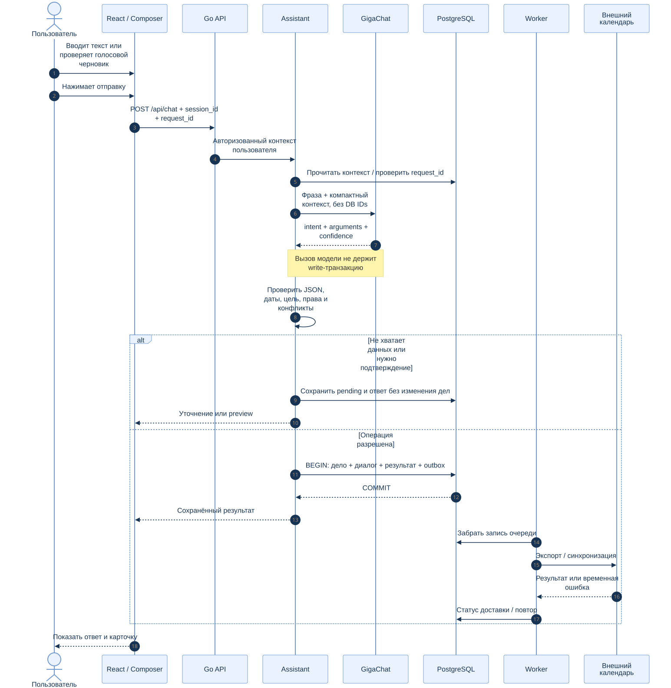

Архитектура · 26 октября 2026
Как устроен Гена
Русскоязычный ассистент для задач, встреч и напоминаний. React/TypeScript в браузере, модульный Go backend и PostgreSQL. Восемь схем показывают компоненты, данные и путь от запроса до сохранённого результата.
Откройте SVG для увеличения. Все диаграммы доступны без внешнего CDN; исходники Mermaid находятся рядом.
Система целиком
Открыть SVG ↗
Браузер/PWA, Nginx, один Go runtime, PostgreSQL и внешние провайдеры. GigaChat понимает текст; Go проверяет и исполняет операции.

Блоки приложения
Открыть SVG ↗
Границы API, ассистента, календаря, социального модуля, хранилища и фоновых workers внутри модульного монолита.

UML: основные зависимости
Открыть SVG ↗
Существенные интерфейсы и связи Go в сокращённом виде. Это обзор, а не полный набор полей и сигнатур классов.

UML: выполнение команды
Открыть SVG ↗
Inference выполняется вне write-транзакции. Go разрешает ссылки текущего пользователя, проверяет данные и атомарно сохраняет действие и контекст.

UML: уточнение и подтверждение
Открыть SVG ↗
Недостающие поля и неоднозначные цели требуют уточнения. Удаление и массовые операции выполняются после подтверждения конкретного snapshot.

ER: данные и область пользователя
Открыть SVG ↗
Основные таблицы и логические связи приложения. Не каждая линия означает FK: cloud_event_links сохраняются для удаления внешних событий после локального удаления.

Голос: черновик и ручная отправка
Открыть SVG ↗
MediaRecorder → Groq STT → редактируемый черновик. Только пользователь отправляет текст в чат. Azure TTS вызывается отдельным нажатием.

CI/CD и production
Открыть SVG ↗
GitHub проверяет и собирает архив. Ограниченный SSH receiver валидирует его, проверяет backup, обновляет app и проверяет health; при неудаче откатывает приложение. SQL-миграции автоматически не отменяются.
